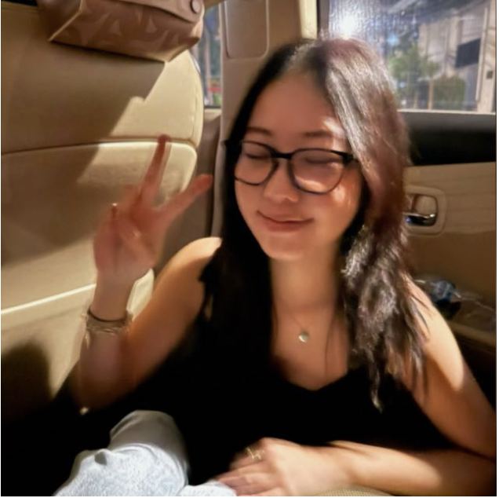

Conversations with
Calista
From the perspectives of Chinese-Indonesians
“Please describe what feels like
home to you?”

K
H:
Home feels like the small moments
I share with the people around me.
One of the things I miss most when I am
away is home-cooked food. Growing up,
meals were
never just about
eating-- they were a time to sit together, talk about
our day, and catch
up with family and friends.
Certain foods instantly bring back memories of celebrations, family
gatherings, and
everyday moments that made me feel comfortable and connected.
More than a specific place, home is the sense of community
I find in the people around me.
Whether it is sharing a meal with friends,
spending time with family, or simply being
surrounded by familiar faces, I feel most at home when there is a sense of warmth and belonging.
Moving to new places has made me realize that home is less about where you are and
more about
the relationships you build
and the people who make you feel welcomed and supported.